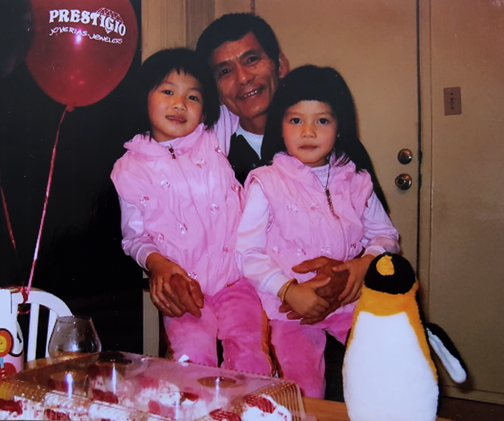

A collection of content to reflect on what I have learned, or are currently learning in class.
Design Best Practices for Games
Much like web design, game design also has many factors to consider when it comes to user experience. UI positioning is one factor to take note of. Mobile and web positioning are very different and understand which part of the screen is considered easier access is important. This will let you know what elements should go where. Essential elements for a game should belong in the easier access areas, for mobile this in the bottom and center right of the screen, where the thumb is easily able to access.
Sliders are an easy addition to adding more content but without cluttering the screen. With sliders, the design must be visible enough for the user to know there are extra contents within the slider. Animations can be a visual addition to let users know when the action has been concluded.
Pop ups are also another great addition to add without the clutter. When a pop up is initiated, it is good to dim the background dog the pop up for the contents to be notable. Avoid using the X as the default exit to encourage users to actually read the pop up before exiting out. A good repacement woud be to use user choice instead of an X. This makes the user consider their choices and to make one without the haste.
If user choice is part of a design, it is important to note not to switch common practices. For example, "no" choices are usually placed on the left while "yes" choices are placed on the right. Switching these up could confuse a user and make them make the wrong choices based on muscle memory.
User rewards is also a good way to make a user participate in something they normally won't such as watching an add. If this is part of your game design, having a system for the reward is a great choice. For example, note how long a person much watch an ad before gain their reward or if it is only a one time opportunity.
Other design practices to take account for is if your game has draggable objects, make sure the image used isn't the entire image but rather the subjects within the image. Having intro videos shouldn't be repetative and give the option to skip or rewatched when the user wants. Skip buttons should also be visible to the eyes and not super tiny. This can make it difficult to actually press the buttons. These are some UI UX best practices when it comes to game design.
Visual Thinking Analysis

Maggie Ma 2023
This image is part of my very small family picture collection. We rarely ever take photos so this is one of the few images I have as a child with my dad. Through these photos, you can see the time gaps between each. It shows how fast time flies and is almost bittersweet to think back to the times these images were taken. For this specific photo, I believe it was my sister's birthday. My parents often dressed us the same as if we were twins even though my sister is one year older than me. The most interesting part to me is the little stories that are attached to the items in the photos. Those balloons were given by a jewelry store at our local mall. My mother would take me and my sister every so often and we would always stop by the exact jewelry store for free balloons. The penguin is my childhood teddy bear that I still have to this day. It is currently sitting on my dresser right now ^^. And last but not least is a detail that only my family would probably know. This is the only image we have of my dad smiling. He doesn't smile often and even less in photos. While this archive doesn't say something specific about me, it tells a great story about my family and childhood.
Ashley Chang 2023
This image is of a jellyfish in either an aquarium or some sort of tank. The most obvious aspect of this image is that it is just an image of a jellyfish but if you think about it more thoroughly, you can ask questions about what species of jellyfish and if it's the type of jellyfish that stings. Where does this jellyfish live and what is its habitat like? How is this image specific to the individual who took it? I can see some creative ways to make the deep blue sea more appealing than just at surface level and I'm curious to see how these questions can be answered or be provoked through user interactions.
I think one of the greater things about this image is that the general idea is still being discovered. A good percentage of the ocean is still undiscovered and not many people visit the ocean or have been out to sea in general. I haven't been out to sea or swam in the ocean. (I can't swim) I can see this project as being greatly educational and tugging at people's curiosity while also having a good educational aspect about all the interesting little creatures in the ocean.
Visual Thinking Strategies
A picture is worth a thousand words. Complex ideas can be conveyed through a simple image and effectively draw out complex verbal descriptions. As a designer, the ability to critically analyze an image is a vital skill to gain. Here are some tips to gain a better understanding of visual literacy and thinking.
Understanding the different elements and visuals of an image can also allow for a better understanding of the intended message it is trying to convey, such as visual cues, symbols, lighting, contrast, and color. Different colors can have different feelings and different symbols and imagery can trigger different feelings in emotions. The small details can really enhance an image on a website for better or worse. Cognac Godet uses images and color to enhance their image as a liquor company. The visuals they use give off a very premium almost luxurious feel when exploring their website. It reflects the understanding of how color and images can work together to create feelings and emotions.
In order to gain a deeper understanding of an image, it is important to consider the multiple perspectives of interpretation. An image can mean one thing to a person and completely different to another. Being about to tell these differences can avoid confusion in design. Asking different questions like “What’s going on in this picture?” can open up more questions and meanings. Introducing new ideas can identify any potential biases or agendas within an image that can influence the intended messages. Practicing these analytical skills can improve your design lenses and assist you in navigating design choices.
Overlays Design Pattern Research
A modal window or dialog window is an element that sits on top of a main page with the purpose of showing additional information, grabbing a person's attention, or requesting some sort of information from a user. You've most likely come across many different forms of modal windows, for example, when you are online shopping, sites often invite users to enter an email for a discount. When using modal windows, it is important to follow these best practices.
Consider the context and purpose of the modal. Before implementing a modal window, analyze the specific context in which it will be used determine its purpose, and then relay that to the user to know what is going on.
Modal windows should enhance the user experience, not hinder it. Provide a clear and easily accessible way for users to dismiss the modal window, such as a close/escape button or a click outside the window. Having labeled and color-coordinated buttons can also greatly enhance a user's experience.
Modal windows should also be used sparingly. Avoid overwhelming the user with too many modal windows, which can interrupt their workflow and cause frustration. Avoid making them too big or too small either. Provide clear and concise information. Avoid overcrowding the window with excessive text or unnecessary elements that may confuse the user. Modal windows should present information in a clear and concise manner.
Ensure responsive design using modal windows. Modal windows should be designed to be responsive and adapt to different screen sizes and resolutions.
Make sure that the modal windows are accessible to all users, including those with disabilities. Use appropriate contrast and colors that can make the modal window easily readable and visually appealing such as dimming the background when a modal is triggered. These are some best practices to consider when adding modal windows to your website.
Design Best Practices
One of the most important design practices in HTML and CSS is keeping your code clean and as organized as possible. When coding starts to get a little long, it becomes increasingly difficult to find specific lines of code that you need. It is good to take the extra steps and add descriptive names for elements and use semantic HTML markup. Making use of indentations can also help with the flow over every section or article you're working with.
Keeping the design clean and minimalistic is important, avoiding cluttered layouts or excessive use of decorative elements. This helps to improve the overall user experience and make the website more visually appealing. Typography also plays a crucial role in the design of HTML and CSS. Other general design practices is minimizing the number of objects and a screen and focusing on including only the specifics. Many online apparel stores such as Etsy or Amazon like to mush many categories on the front page as possible to get more consumers to click on things. To combat the large amount of content on one page, Etsy does a good job is seperating each section into its own respective containers with bold fonts whereas Amazon uses sections that just do not have enough contrast to really pay attention to it. Choosing appropriate fonts, font sizes, line spacing, and colors can greatly enhance the readability and aesthetics of a website.
One final design practice to consider is having a user-friendly navigation, clear call-to-action buttons, and responsive design for different devices and screen sizes. A good navigation and call to call-to-action buttons allows users to travel to different parts of sites easily. Responsive design is essential so a site can appear coherent and adapt to different screen sizes. All of these design practices ensure that the website can be easily accessed and understood by users with disabilities or those using assistive technologies.